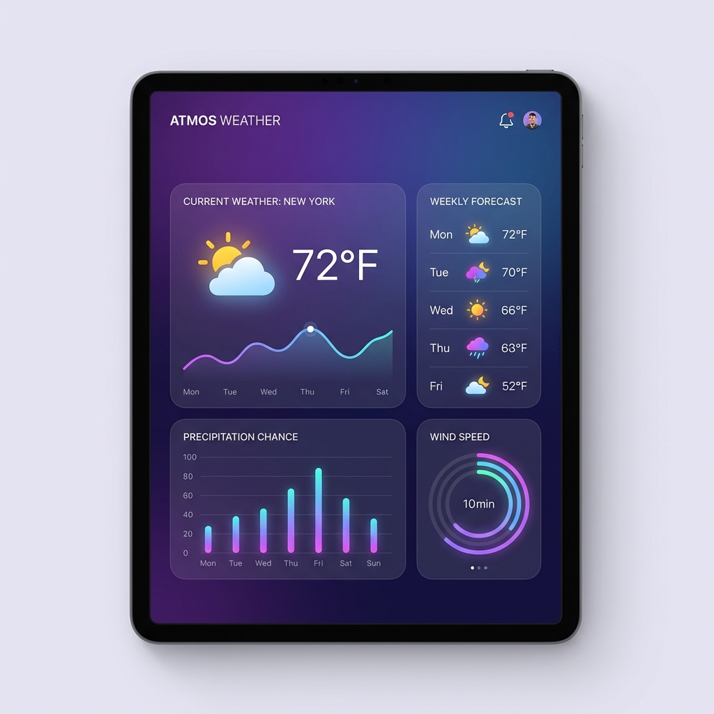

Weather Dashboard
An interactive weather application featuring real-time forecasts, location-based weather data, beautiful data visualizations, and a 7-day forecast — delivering weather insights with a stunning, dynamic interface.

Project Overview
The vision behind this project
Weather Data, Beautifully Presented
This weather dashboard was created with the philosophy that weather data should be both informative and visually engaging. Instead of a typical text-heavy weather app, this dashboard presents meteorological data through beautiful charts, animated weather icons, and a dynamic interface that adapts its color scheme based on current conditions.
The app pulls real-time weather data from the OpenWeather API, including current conditions, hourly forecasts for the next 48 hours, and a 7-day daily forecast. Users can search for any city worldwide or use their device's geolocation for automatic location detection. Weather data is presented through interactive Chart.js visualizations showing temperature trends, humidity patterns, wind speed changes, and precipitation probability.
A unique feature is the dynamic background and theme system — the entire interface subtly shifts its color palette based on the current weather condition (sunny, cloudy, rainy, snowy) and time of day, creating an immersive experience that reflects the outside world.
Key Features
What makes this dashboard special
Real-Time Weather
Current temperature, feels-like, humidity, wind speed, UV index, visibility, and pressure with auto-refresh every 10 minutes for always-fresh data.
Interactive Charts
Temperature trends, humidity curves, and wind speed patterns visualized through smooth Chart.js line and bar charts with hover tooltips and responsive scaling.
7-Day Forecast
Extended forecast with daily high/low temperatures, precipitation probability, weather descriptions, and animated weather condition icons for each day.
Location Detection
Automatic geolocation detection for instant local weather, plus a search bar with autocomplete suggestions for exploring weather in any city worldwide.
Dynamic Themes
The interface adapts its color scheme based on weather conditions and time of day — warm tones for sunny weather, cool blues for rain, and dark themes for nighttime.
Saved Locations
Save frequently checked locations for quick access, with a sidebar showing at-a-glance conditions for all saved cities, stored in localStorage for persistence.
Tech Stack
Technologies powering this project
JavaScript (ES6+)
Async/await for API calls, DOM manipulation, module pattern for code organization, and localStorage API
OpenWeather API
One Call API 3.0 for current, hourly, daily forecasts, and weather alerts in a single request
Chart.js
Responsive, interactive charts with gradient fills, custom tooltips, and animated transitions
CSS3
CSS custom properties for dynamic theming, Grid/Flexbox layouts, and smooth CSS animations
Geolocation API
Browser's native geolocation for automatic user location detection with fallback handling
Architecture & Approach
How this project was built
1. API Integration Strategy
Chose OpenWeather's One Call API to minimize HTTP requests — a single call returns current weather, hourly forecast (48h), daily forecast (7d), and weather alerts. Implemented caching to avoid redundant API calls within 10-minute windows.
2. Dynamic Theming System
Built a CSS custom property-based theming engine that maps weather condition codes to color palettes. On each data fetch, the app reads the weather ID and time-of-day, then smoothly transitions CSS variables for background, text, and accent colors.
3. Data Visualization
Created a chart configuration factory that transforms raw API data into Chart.js datasets with proper formatting, gradient fills, and responsive options. Charts update seamlessly when switching between locations.
4. Responsive Layout
Designed a card-based grid layout using CSS Grid with auto-fit columns that gracefully rearranges from a multi-column desktop view to a single-column mobile layout. Weather cards include subtle hover animations for interactivity.
5. Error Handling & UX
Implemented comprehensive error handling for failed API calls, geolocation denials, invalid city searches, and network issues — each with user-friendly error messages and recovery suggestions rather than generic error screens.
Challenges & Solutions
Problems I solved along the way
API Rate Limiting
The free tier of OpenWeather API has strict rate limits. Frequent location switches and auto-refresh could quickly exhaust the daily quota.
Implemented a smart caching layer using localStorage with TTL (time-to-live) timestamps. Cached responses are served for repeated requests within 10 minutes, reducing API calls by approximately 70%.
Cross-Browser Geolocation
The Geolocation API behaves differently across browsers and many users deny location permission, requiring robust fallback handling without degrading the experience.
Implemented a graceful fallback chain: try geolocation → fall back to IP-based location → fall back to a default city, with a prominent search bar always visible so users can manually enter their location.